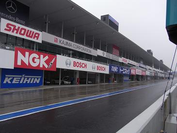
見事に雨です。 そもそも天気予報では前日の昼まで晴れ予報だったのに。。
よっぽど日ごろの行いが悪いんでしょうか（笑
昼からは晴れて！と願いつつ。。
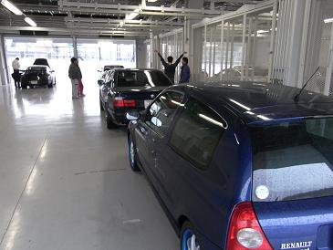
パドックに車を入れて、受付を済まして、サーキットの走り方について説明を受けます。
ちなみに、突っ込むとガードレールが1m2.5諭吉 スポンジバリアが10諭吉だそうだ（汗
今回、同じショップからエントリーした車たち。
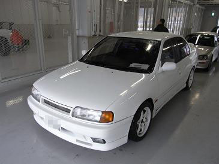
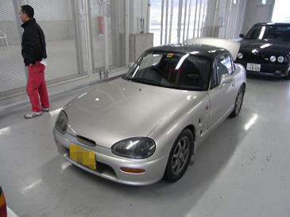
Ｓ氏のプリメーラ Ｄ氏のカプチーノ
オーテックのコンプリートエンジンに換装済み 100馬力仕様にチューニング
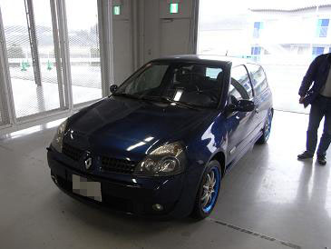
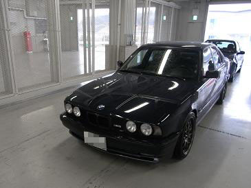
Ａ氏のルーテシア Ｍゴロー
ノーマルに見えて、ピロ足だったり 前のブレーキパッドだけサーキット用に交換
カーボンボンネットだったり・・・
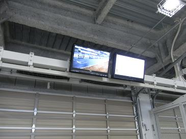
パドック内にはこんなモニターもあったりして、各コーナーでの状況がわかるようになっています。
この日はGT500の練習走行もあったようで、たまに爆音のレーシングカーが通り過ぎていく。
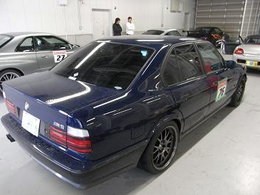
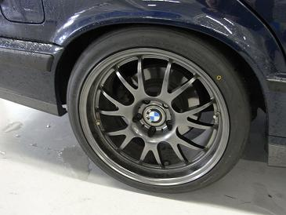
今回の走行会は初級と上級で各35台づつに別れ、午前と午後に30分 ２回の走行です。
Ｍゴローは受付上の関係から上級で走ることに。。
上級だからといって周回タイムが決まっているわけでもなく、単なるクラス分け。
しかし、、上級って聞こえにすごく不安を感じたので・・・（笑
主催者さんに聞いたところ、『雨だとスピンしても皆さん避けてくれるので逆に上級は安全です（ニッコリ）』と。。
いや、ニッコリされても・・・ と思いつつ再び“無茶はしないでおこう”と心に決め走行の準備を。
ライトにテーピングして、ゼッケン貼って、計測器をセットして、タイヤの空気圧を冷間で2.0Kpaに落とす。
そうこうしてると午前の初級グループがスタート！
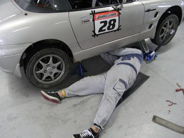
各車３周ぐらい走ったところで、赤旗 走行中断のフラッグが。。
各車続々とピットに戻ってくる中、、Ｄ氏のカプチーノが戻ってこない・・・（汗
まさか・・・?! 一緒に来ていたショップのオーナーが受付へ確認に走る！
そこへ一緒に走っていたＳ氏のプリメーラが戻ってきた。
Ｓ氏：「Ｄ氏がテグナーでグラベルに横に刺さってた（笑」と。。 いや笑ってていいのか？！
緊張の時間がしばらくつづき・・・Ｄ氏がすごい音をたてながら自走で戻ってきた。
幸い大きな事故ではなかったようでホッとする。。
Ｄ氏に聞くと、テグナーが異様に滑りやすくなっていたようで、スピンしたままグラベルに突っ込んで地面と横向き90度に刺さったそうだ。
上の写真は修理中のＤ氏とカプチーノ
これを聞いて、ますます“無茶はしないでおこう”と心に決めるＭゴローだった。
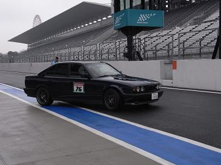
いよいよ走行だ。
速く走れないのは分かっているので、、最後にパドックから出た。
しばらくは、鈴鹿を走ったことがあるというＡ氏の後を追うことに。
が！しかし！ あれだけ“無茶はしないでおこう”と決めていたのに・・・ 走りだすとダメですね（笑
A氏をパスし、前後に車がいないことを確認して好きに走る。
雨でズルズルリヤが滑り出そうとしているのが分かる・・・
あ！滑らせても楽しそう・・・！ でもリヤタイヤ交換してまだ１週間だし。。 もったいないなぁ・・・
なんて思いながら走っていると、ヘアピンカーブが目の前に！ よし、いってまえ〜！ ズリズリー！
「気持ち良〜い！」
ＬＳＤのおかげだろう、リヤがスライドしながら曲がっていく感じが分かる。
ヘアピンコーナー〜２００Ｒへ続く広いゾーンなので多少滑らせても立て直せるのだ。
心に誓った“無茶はしないでおこう”はどこかへ飛んでいってしまったようだ（笑
３周目でブレーキがフワフワしてきた。。 どうやらノーマルパッドのままのリアブレーキがフェードしてきたようだ。
テグナー手前でブレーキングするとフロントしかブレーキが効いていない・・・
そしてヘアピンカーブ〜スプーンカーブを抜けて130Rへ！
ここはバックストレートから続く高速コーナーなのでスピンすれば終了・・・
特にアウトへ膨らんで芝を踏むと大概はスピンしてしまう怖いコーナーだ。 それを頭に入れつつまずは100kmで突っ込む。
よし、もう少しイケる！
それを確認したところで赤旗が振られ走行中断 ピットへ。
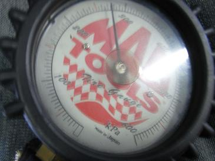
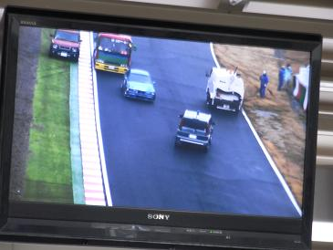
冷間で2.0Kpaに合わせた空気圧が走行後は2.7Kpaにまで上昇していた。
晴れていればもっと上昇するのだろう。
中断の原因はクラッシュだったようだ。
この日はエントリーした１割ぐらいの車がクラッシュで潰れていた。。。
ここでやっと心に誓った“無茶はしないでおこう”が戻ってきた（笑
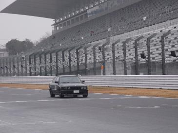
 ←直線の走行動画（３秒だけ）
←直線の走行動画（３秒だけ）
そして、午後から２回目の走行です。
雨は上がるどころかヒドくなって、テグナーのインには水溜りも・・・ グリップを失わないようにネトーッとコーナーを曲がっていきます。
さっきフェード気味だったリアブレーキは２周目にしてタレてきました。
フロントだけでもサーキット用のパッドに交換してきて正解でした。 交換していなかったら走れたもんじゃなかったと思います(-_-;)
ちょうどバックストレートでGTRに抜かれたので、さっき100kmで突っ込んだ130RをGTRについてもう少し攻めてみようと追うが・・・
無理！（笑
ブレーキングのポイントも違う、とても追っていける速度じゃありません・・・（絶句
別の周ではシビックがほぼノーブレーキで130Rを駆け抜けていきます。 スゴイ・・・！
晴れてたらどんな走りするんでしょう・・・
34じゃドライでも140kmぐらいが限界な気がします。
で、何事も少し慣れてきた頃が危ないんですね〜（笑
ヘアピンからスプーンコーナーの間で140kmからスピンしてしまいました（汗
ヘアピンからフルスロットルで立ち上がって、スピードも乗ってきて・・・ 緩い右コーナーの200Rを抜けたその時！
ズズズ・・・ ズサーーーーーーーーーー！
「あっ！」と思った時には遅く、スピン！ 2回転ぐらいしたような・・・
コース幅が広かったことと、前後に車がいなかったのでぶつかることなく止まれた（滝汗
書いていて怖かった瞬間がよみがえって来る・・・
エンストしていたので惰性でグリーン上に移動して再スタート！
次の周回で200Rに差し掛かるとタイヤ痕が（笑
鈴鹿に34の痕跡を残してやったぜ！（違
しばらく走ると、さっきとは違うリアがウニウニした感じも。。 タイヤもか・・・
そんなこんなで5〜6周走った頃、またしても赤旗で中断。
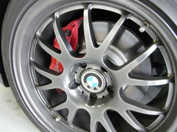
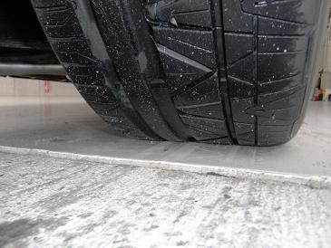
２度目の走行を終えて、パドックに戻ってブレーキとタイヤのチェックを。
フロントブレーキは相当な負荷だったんでしょう、この距離でも暖房器具のように熱気を感じます。
滑り出したリアタイヤは溶けたりしてることもなく、いたって普通・・・
このタイヤ、NITTOのINVOなるハイグリップタイヤですが。。
縦のグリップはそれこそADVANやPOTENZAより良いんじゃないの？ってくらいなのに、横グリップがまったくダメで・・・
今回、フロントはPOTENZAのRE-11 そんなに横が弱く感じることもなかった。
やっぱりハイグリップタイヤはADVANかPOTENZAだな。
今までADVANとPOTENZAシリーズは、
RE01→AD07→RE01R→AD07→RE11と履きかえてきたが、MゴローはAD07（ADVAN）が好みだ。
次に走る機会があればAD07で走ってみたい。
Ｓ氏はフェデラル595RSを履いていたが、同じく横はヨレてまったくダメだそうだ。
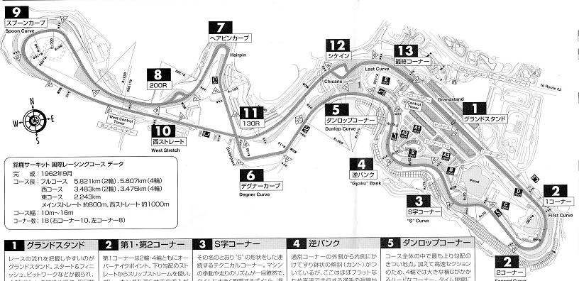
これが鈴鹿サーキットのコース
２番・・・２コーナーを過ぎて、Ｓ字〜逆バンクまでは上りなのだが、535iではパワー不足からガンガン抜かれていく（笑
もっとパワーが欲しい・・・！
６番・・・テグナーカーブは思ったよりも直ぐに迫ってくるのでブレーキングがつい遅くなる。
そして立ち上がりでパワー不足からまたガンガン抜かれる（笑
７番・・・ヘアピンでテールスライドで駆け抜け
８番・・・200Rを過ぎたあたりでスピン
１１番・・・130Rがバックストレートからの高速コーナー
タイムは、今回走った4台のメンバーの中でトップだったので良しとしよう＾＾
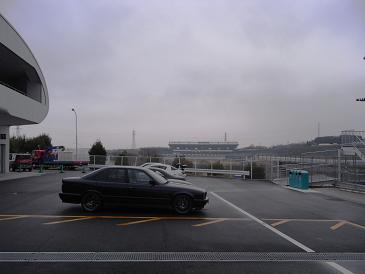
速く走る以上に止まることが重要だと気づいた走行会だった。
リヤのパッドは炭化してしまったのか、サーキットから帰ってきた後もあまり効いていないようなので早速交換だ。
フロントの足回りはまだ良いとして、リアがまったくダメなことにも気づいた。
フロントに倒立アブソーバーを入れた時のような剛性がリヤにも欲しい！
本当は車高調でも入れればベストなのだろうが、そんな余裕もないし。
そうか！本気で走るならE36辺りを１台・・・（笑
いやいや、サーキットで好き放題していたら懐が持ちません。。
次は晴れた日に！ E34数台でつるんで走ってみたいなぁ〜！